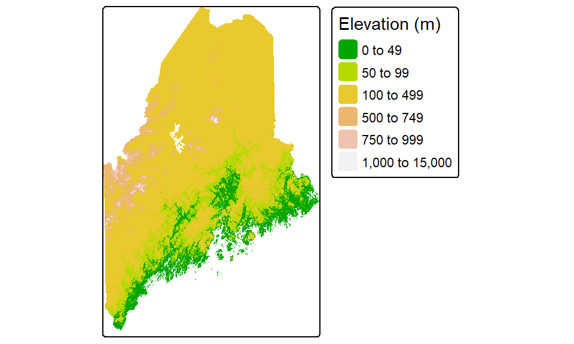
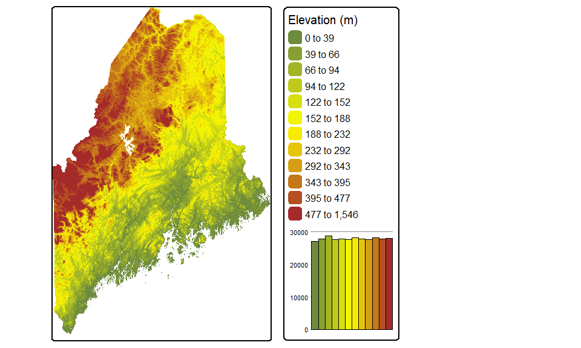
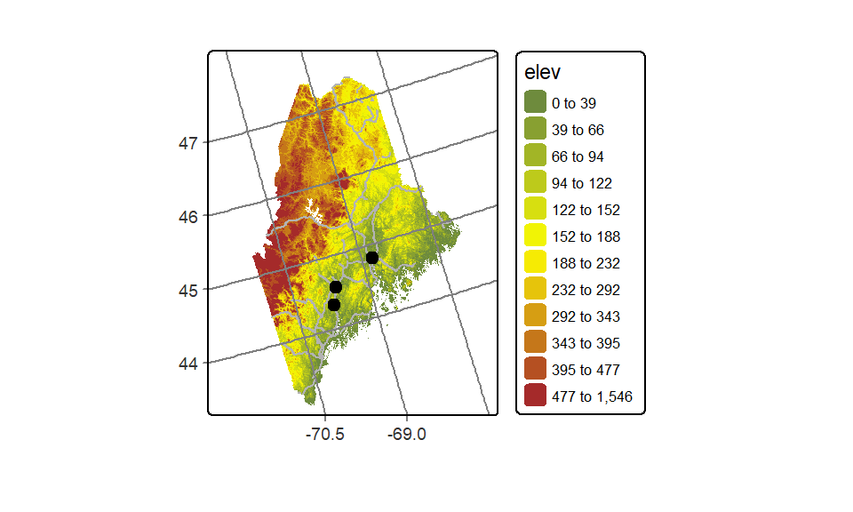
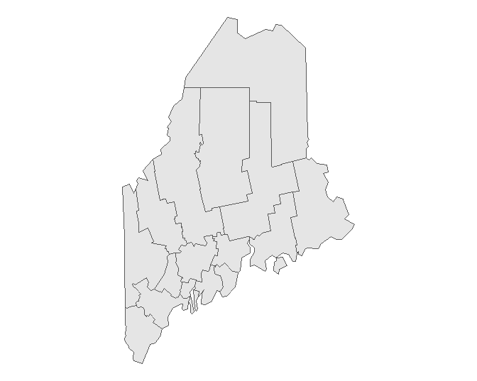
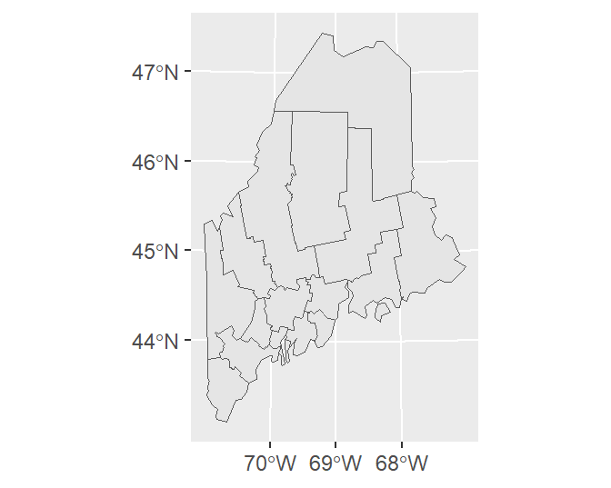
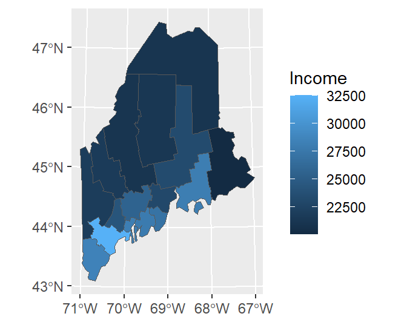
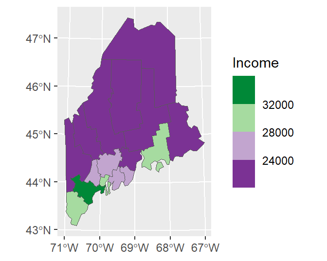
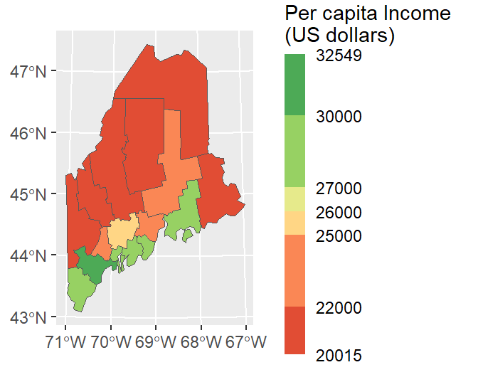
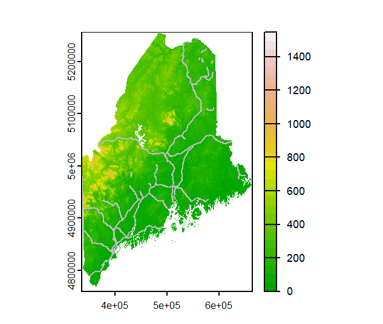

B Mapping data in R
| R | sf | tmap | ggplot2 | raster |
| 4.1.1 | 1.0.2 | 3.3.2 | 3.3.5 | 3.4.13 |
There are many mapping environments that can be adopted in R. Three are presented in this tutorial: tmap, ggplot2 and plot_sf.
Sample files for this exercise
Data used in the following exercises can be loaded into your current R session by running the following chunk of code.
library(sf)
load(url("https://github.com/mgimond/Spatial/raw/main/Data/Sample1.RData"))The data objects consist of five layers: an elevation raster (elev.r), an interstate polyline layer (inter.sf), a point cities layer (p.sf), a railroad polyline layer (rail.sf) and a Maine counties polygon layer (s.sf). All vector layers are sf objects. All layers are in a UTM/NAD83 projection (Zone 19N) except p.sf which is in a WGS 1984 geographic coordinate system.
tmap
The tmap package is specifically developed for mapping spatial data. As such, it offers the greatest mapping options. The package recognizes sf, raster and Spatial* objects.
The basics
To map the counties polygon layer using a grey color scheme, type:
library(tmap)
tm_shape(s.sf) + tm_polygons(col="grey", border.col="white")The tm_shape function loads the spatial object (vector or raster) into the mapping session. The tm_polygons function is one of many tmap functions that dictates how the spatial object is to be mapped. The col parameter defines either the polygon fill color or the spatial object’s attribute column to be used to define the polygons’ color scheme. For example, to use the Income attribute value to define the color scheme, type:
tm_shape(s.sf) + tm_polygons(col="Income", border.col = "white")Note the + symbol used to piece together the functions (this is similar to the ggplot2 syntax).
You can customize the map by piecing together various map element functions. For example, to move the legend box outside of the main map body add the tm_legend(outside = TRUE) function to the mapping operation.
tm_shape(s.sf) + tm_polygons("Income", border.col = "white") +
tm_legend(outside = TRUE)You can also choose to omit the legend box (via the legend.show = FALSE parameter) and the data frame border (via the tm_layout(frame = FALSE) function):
tm_shape(s.sf) +
tm_polygons("Income", border.col = "white", legend.show=FALSE) +
tm_layout(frame = FALSE)If you want to omit the polygon border lines from the plot, simply add the border.col = NULL parameter to the tm_polygons function.
tm_shape(s.sf) +
tm_polygons("Income", border.col = NULL) +
tm_legend(outside = TRUE)Note that the tm_fill function is nearly identical to the tm_polygons function with the difference being that the tm_fill function does not draw polygon borders.
Combining layers
You can easily stack layers by piecing together additional tm_shapefunctions. In the following example, the railroad layer and the point layer are added to the income map. The railroad layer is mapped using the tm_lines function and the cities point layer is mapped using the tm_dots function. Note that layers are pieced together using the + symbol.
tm_shape(s.sf) +
tm_polygons("Income", border.col = NULL) +
tm_legend(outside = TRUE) +
tm_shape(rail.sf) + tm_lines(col="grey70") +
tm_shape(p.sf) + tm_dots(size=0.3, col="black") Layers are stacked in the order in which they are listed. In the above example, the point layer is the last layer called therefore it is drawn on top of the previously drawn layers.
Note that if a layer’s coordinate system is properly defined, tmap will reproject, on-the-fly, any layer whose coordinate system does not match that of the first layer in the stack. In this example, s.sf defines the map’s coordinate system (UTM/NAD83). p.sf is in a geographic coordinate system and is thus reprojected on-the-fly to properly overlap the other layers in the map.
Tweaking classification schemes
You can control the classification type, color scheme, and bin numbers via the tm_polygons function. For example, to apply a quantile scheme with 6 bins and varying shades of green, type:
tm_shape(s.sf) +
tm_polygons("Income", style = "quantile", n = 6, palette = "Greens") +
tm_legend(outside = TRUE)Other style classification schemes include fixed, equal, jenks, kmeans and sd. If you want to control the breaks manually set style=fixed and specify the classification breaks using the breaks parameter. For example,
tm_shape(s.sf) +
tm_polygons("Income", style = "fixed",palette = "Greens",
breaks = c(0, 23000, 27000, 100000 )) +
tm_legend(outside = TRUE)If you want a bit more control over the legend elements, you can tweak the labels parameter as in,
tm_shape(s.sf) +
tm_polygons("Income", style = "fixed",palette = "Greens",
breaks = c(0, 23000, 27000, 100000 ),
labels = c("under $23,000", "$23,000 to $27,000", "above $27,000"),
text.size = 1) +
tm_legend(outside = TRUE)Tweaking colors
There are many color schemes to choose from, but you will probably want to stick to color swatches established by Cynthia Brewer. These palettes are available in tmap and their names are listed below.
For sequential color schemes, you can choose from the following palettes.

For divergent color schemes, you can choose from the following palettes.

For categorical color schemes, you can choose from the following palettes.

For example, to map the county names using the Pastel1 categorical color scheme, type:
tm_shape(s.sf) +
tm_polygons("NAME", palette = "Pastel1") +
tm_legend(outside = TRUE)To map the percentage of the population not having attained a high school degree (column labeled NoSchool in s.sf) using a YlOrBr palette with 8 bins while modifying the legend title to read “Fraction without a HS degree”, type:
tm_shape(s.sf) +
tm_polygons("NoSchool", style="quantile", palette = "YlOrBr", n=8,
title="Fraction without \na HS degree") +
tm_legend(outside = TRUE)The character \n in the “Fraction without \na HS degree” string is interpreted by R as a new line (carriage return).
If you want to reverse the color scheme simply add the minus symbol - in front of the palette name as in palette = "-YlOrBr"
Adding labels
You can add text and labels using the tm_text function. In the following example, point labels are added to the right of the points with the text left justified (just = "left") and with an x offset of 0.5 units for added buffer between the point and the text.
tm_shape(s.sf) +
tm_polygons("NAME", palette = "Pastel1", border.col = "white") +
tm_legend(outside = TRUE) +
tm_shape(p.sf) +
tm_dots(size= .3, col = "red") +
tm_text("Name", just = "left", xmod = 0.5, size = 0.8)The tm_text function accepts an auto placement option via the parameter auto.placement = TRUE. This uses a simulated annealing algorithm. Note that this automated approach may not generate the same text placement after each run.
Adding a grid or graticule
You can add a grid or graticule to the map using the tm_grid function. You will need to modify the map’s default viewport setting via the tm_layout function to provide space for the grid labels. In the following example, the grid is generated using the layer’s UTM coordinate system and is divided into roughly four segments along the x-axis and five segments along the y-axis. The function will adjust the grid placement so as to generate “pretty” label values.
tm_shape(s.sf) +
tm_polygons("NAME", palette = "Pastel1") +
tm_legend(outside = TRUE) +
tm_layout(outer.margins = c(.1,.1,.1,.1)) +
tm_grid(labels.inside.frame = FALSE,
n.x = 4, n.y = 5)To generate a graticule (lines of latitude and longitude), simply modify the grid’s coordinate system to a geographic one using either an EPSG defined coordinate system, or a PROJ4 formatted string. But note that the PROJ string syntax is falling out of favor in current and future R spatial environments so, if possible, adopt an EPSG (or OGC) code. Here, we’ll use EPSG:4326 which defines the WGS 1984 geographic coordinate system.
We will also modify the grid placement by explicitly specifying the lat/long grid values.
tm_shape(s.sf) +
tm_polygons("NAME", palette = "Pastel1") +
tm_legend(outside = TRUE) +
tm_layout(outer.margins = c(.1,.1,.1,.1)) +
tm_grid(labels.inside.frame = FALSE,
x = c(-70.5, -69, -67.5),
y = c(44, 45, 46, 47),
projection = "EPSG:4326")Adding the ° symbol to the lat/long values requires a bit more code:
tm_shape(s.sf) +
tm_polygons("NAME", palette = "Pastel1") +
tm_legend(outside = TRUE) +
tm_layout(outer.margins = c(.1,.1,.1,.1)) +
tm_grid(labels.inside.frame = FALSE,
x = c(-70.5, -69, -67.5) ,
y = c(44, 45, 46, 47),
projection = "+proj=longlat",
labels.format = list(fun=function(x) {paste0(x,intToUtf8(176))} ) )Here, we use the unicode decimal representation of the ° symbol (unicode 176) and pass it to the intToUtf8 function. A list of unicode characters and their decimal representation can be found on this Wikipedia page.
Adding statistical plots
A histogram of the variables being mapped can be added to the legend element. By default, the histogram will inherit the colors used in the classification scheme.
tm_shape(s.sf) +
tm_polygons("NoSchool", palette = "YlOrBr", n = 6,
legend.hist = TRUE, title = "% no school") +
tm_legend(outside = TRUE, hist.width = 2) Mapping raster files
Raster objects can be mapped by specifying the tm_raster function. For example to plot the elevation raster and assign 64 continuous shades of the built-in terrain color ramp, type:
tm_shape(elev.r) +
tm_raster(style = "cont", title = "Elevation (m)",
palette = terrain.colors(64))+
tm_legend(outside = TRUE)Note the use of another style parameter option: cont for continuous color scheme.
You can choose to symbolize the raster using classification breaks instead of continuous colors. For example, to manually set the breaks to 50, 100, 500, 750, 1000, and 15000 meters, type:
tm_shape(elev.r) +
tm_raster(style = "fixed", title = "Elevation (m)",
breaks = c(0, 50, 100, 500, 750, 1000, 15000),
palette = terrain.colors(5))+
tm_legend(outside = TRUE)
Other color gradients that R offers include, heat.colors, rainbow, and topo.colors. You can also create your own color ramp via the colorRampPalette function. For example, to generate a 12 bin quantile classification scheme using a color ramp that changes from darkolivegreen4 to yellow to brown (these are built-in R colors), and adding a histogram to view the distribution of colors across pixels, type:
tm_shape(elev.r) +
tm_raster(style = "quantile", n = 12, title = "Elevation (m)",
palette = colorRampPalette( c("darkolivegreen4","yellow", "brown"))(12),
legend.hist = TRUE)+
tm_legend(outside = TRUE, hist.width = 2)
Note that the Brewer palette names can also be used with rasters.
Changing coordinate systems
tmap can change the output’s coordinate system without needing to reproject the data layers. In the following example, the elevation raster, railroad layer and point city layer are mapped onto a USA Contiguous Albers Equal Area Conic projection. A lat/long grid is added as a reference.
# Define the Albers coordinate system
aea <- "+proj=aea +lat_1=29.5 +lat_2=45.5 +lat_0=37.5 +lon_0=-96 +ellps=GRS80 +datum=NAD83"
# Map the data
tm_shape(elev.r, projection = aea) +
tm_raster(style = "quantile", n = 12,
palette = colorRampPalette( c("darkolivegreen4","yellow", "brown"))(12),
legend.show = FALSE) +
tm_shape(rail.sf) + tm_lines(col = "grey70")+
tm_shape(p.sf) +tm_dots(size=0.5) +
tm_layout(outer.margins = c(.1,.1,.1,.1)) +
tm_grid(labels.inside.frame = FALSE,
x = c(-70.5, -69, -67.5),
y = c(44, 45, 46, 47),
projection = "+proj=longlat")
The first data layer’s projection= parameter will define the map’s coordinate system. Note that this parameter does not need to be specified in the other layers taking part in the output map.
If a projection is not explicitly defined in the first call to tm_shape, then the output map will default to the first layer’s reference system.
Side-by-side maps
You can piece maps together side-by-side using the tmap_arrange function. You first need to save each map to a separate object before combining them. For example:
inc.map <- tm_shape(s.sf) + tm_polygons(col="Income")+
tm_legend(outside=TRUE)
school.map <- tm_shape(s.sf) + tm_polygons(col="NoSchool")+
tm_legend(outside=TRUE)
name.map <- tm_shape(s.sf) + tm_polygons(col="NAME")+
tm_legend(outside=TRUE)
tmap_arrange(inc.map, school.map, name.map)Splitting data by polygons or group of polygons
You can split the output into groups of features based on a column attribute. For example, to split the income map into individual polygons via the NAME attribute, type:
tm_shape(s.sf) + tm_polygons(col = "Income") +
tm_legend(outside = TRUE) +
tm_facets( by = "NAME", nrow = 2)The order of the faceted plot follows the alphanumeric order of the faceting attribute values. If you want to change the faceted order, you will need to change the attribute’s level order.
ggplot2
If you are already familiar with ggplot2, you will find it easy to transition to spatial data visualization. The key geom used when mapping spatial data is geom_sf().
The basics
If you wish to simply plot the geometric elements of a layer, type:
library(ggplot2)
ggplot(data = s.sf) + geom_sf()As with any ggplot operation, you can also pass the object’s name to the geom_sf() instead of the ggplot function as in:
ggplot() + geom_sf(data = s.sf)This will prove practical later in this exercise when multiple layers are plotted on the map.
By default, ggplot will add a graticule to the plot, even if the coordinate system associated with the layer is in a projected coordinate system. You can adopt any one of ggplot2’s gridline removal strategies to eliminate the grid from the plot. Here, we’ll make use of the theme_void() function.
ggplot(data = s.sf) + geom_sf() + theme_void()
If you want to have ggplot adopt the layer’s native coordinate system (UTM NAD 1983 in this example) instead of the default geographic coordinate system, type:
ggplot(data = s.sf) + geom_sf() + coord_sf(datum = NULL)Or, you can explicitly assign the data layer’s datum via a call to st_crs as in ... + coord_sf(datum = st_crs(s.sf))
By setting datum to NULL, you prevent ggplot from figuring out how to convert the layer’s native coordinate system to a geographic one.
You can control grid/graticule intervals using ggplot’s scale_..._continuous functions. For example:
ggplot(data = s.sf) + geom_sf() +
scale_x_continuous(breaks = c(-70, -69, -68)) +
scale_y_continuous(breaks = 44:47)
If you wish to apply a grid native to the layer’s coordinate system, type:
ggplot(data = s.sf) + geom_sf() +
coord_sf(datum = NULL) +
scale_x_continuous(breaks = c(400000, 500000, 600000)) +
scale_y_continuous(breaks = c(4900000, 5100000))To symbolize a layer’s geometries using one of the layer’s attributes, add the aes() function.
ggplot(data = s.sf, aes(fill = Income)) + geom_sf() 
Note that the data and aesthetics can be defined in the geom_sf function as well:
ggplot() + geom_sf(data = s.sf, aes(fill = Income)) To change the border color, type:
ggplot(data = s.sf, aes(fill = Income)) +
geom_sf(col = "white") To remove outlines, simply pass NA to col (e.g. col = NA) in the geom_sf function.
Tweaking classification schemes
To bin the color scheme by assigning ranges of income values to a unique set of color swatches defined by hex values, use one of the scale_fill_steps* family of functions.
ggplot(data = s.sf, aes(fill = Income)) + geom_sf() +
scale_fill_stepsn(colors = c("#D73027", "#FC8D59", "#FEE08B",
"#D9EF8B", "#91CF60") ,
breaks = c(22000, 25000, 27000, 30000))You can adopt Brewer’s color schemes (see the section on Brewer’s color schemes) by applying one of the scale_..._fermenter() functions and specifying the classification type (sequential, seq; divergent, div; or categorical, qual) and the palette name. For example, to adopt a divergent color scheme using the "PRGn" colors, type:
ggplot(data = s.sf, aes(fill = Income)) + geom_sf() +
scale_fill_fermenter(type = "div", palette = "PRGn", n.breaks = 4)The flip the color scheme set direction to 1.
ggplot(data = s.sf, aes(fill = Income)) + geom_sf() +
scale_fill_fermenter(type = "div", palette = "PRGn", n.breaks = 4, direction = 1)
ggplot offers many advanced options. For example, we can modify the bin intervals by generating a non-uniform classification scheme and scale the legend bar so as to reflect the non-uniform intervals using the guide_coloursteps() function and its even.steps = FALSE argument. We’ll also modify the legend bar dimensions and title in this code chunk.
ggplot(data = s.sf, aes(fill = Income)) + geom_sf() +
scale_fill_stepsn(colors = c("#D73027", "#FC8D59", "#FEE08B",
"#D9EF8B", "#91CF60", "#1A9850") ,
breaks = c(22000, 25000, 26000, 27000, 30000),
values = scales::rescale(c(22000, 25000, 26000, 27000, 30000), c(0,1)),
guide = guide_coloursteps(even.steps = FALSE,
show.limits = TRUE,
title = "Per capita Income \n(US dollars)",
barheight = unit(2.2, "in"),
barwidth = unit(0.15, "in"))) 
Combining layers
You can overlap layers in the map by adding calls to geom_sf. In such a scenario, it might be best for readability sake to specify the layer name in the geom_sf function instead of the ggplot function.
ggplot() +
geom_sf(data = s.sf, aes(fill = Income)) +
geom_sf(data = rail.sf, col = "white") +
geom_sf(data = p.sf, col = "green")Note that ggplot will convert coordinate systems on-the-fly as needed. Here, p.sf is in a coordinate system different from the other layers.
You can also add raster layers to the map. However, the raster layer must be in a dataframe format with x, y and z columns. The elev.r raster is in a RasterLayer format and will need to be converted to a dataframe using the as.data.frame function from the raster package. This function has a special method for raster layers, as such, it adds parameters unique to this method. These include xy = TRUE which instructs the function to create x and y coordinate columns from the data, and na.rm = TRUE which removes blank cells (this will help reduce the size of our dataframe given that elev.r does not fill its extent’s rectangular outline).
Since the layers are drawn in the order listed, we will move the rail.sf vector layer to the bottom of the stack. Note that we also need to load the raster package to take advantage of its as.data.frame method.
library(raster) # Used to coerce raster to dataframe
ggplot() +
geom_raster(data = as.data.frame(elev.r, xy=TRUE, na.rm = TRUE),
aes(x = x, y = y, fill = elev)) +
scale_fill_gradientn(colours = terrain.colors(7)) +
geom_sf(data = rail.sf, col = "white") +
geom_sf(data = p.sf, col = "black") +
theme(axis.title = element_blank()) # Removes axes labels
plot_sf
The sf package has its own plot method. This is a convenient way to generate simple plots without needing additional plotting packages.
The basics
By default, when passing an sf object to `plot, the function will generate as may plots as there are attribute columns. For example
plot(s.sf)
To limit the plot to just one of the attribute columns, limit the dataset using basic R indexing techniques. For example, to plot the Income column, type
plot(s.sf["Income"])
To limit the output to just the layer’s geometry, wrap the object name with the st_geometry function.
plot(st_geometry(s.sf))
You can control the fill and border colors using the col and border parameters respectively.
plot(st_geometry(s.sf), col ="grey", border = "white")
Adding a graticule
You can add a graticule by setting the graticule parameter to TRUE. To add graticule labels, set axes to TRUE.
plot(st_geometry(s.sf), col ="grey", border = "white", graticule = TRUE, axes= TRUE)
Combining layers
To add layers, generate a new call to plot with the add parameter set to TRUE. For example, to add rail.sf and p.sf to the map, type:
plot(st_geometry(s.sf), col ="grey", border = "white", graticule = TRUE, axes= TRUE)
plot(rail.sf, col = "grey20", add = TRUE)
Note that plot_sf requires that the layers be in the same coordinate system. For example, adding p.sf will not show the points on the map given that it’s in a different coordinate system.
sf layers can be combined with raster layers. The order in which layers are listed will matter. You will usually want to map the raster layer first, then add the vector layer(s).
plot(elev.r, col = terrain.colors(30))
plot(st_geometry(rail.sf), col ="grey", border = "white", add = TRUE)
Tweaking colors
You can tweak the color schemes as well as the legend display. The latter will require the use of R’s built-in par function whereby the las = 1 parameter will render the key labels horizontal, and the omi parameter will prevent the legend labels from being cropped.
OP <- par(las = 1, omi=c(0,0,0,0.6))
p1 <- plot(s.sf["Income"], breaks = c(20000, 22000, 25000, 26000, 27000, 30000, 33000),
pal = c("#D73027", "#FC8D59", "#FEE08B",
"#D9EF8B", "#91CF60", "#1A9850"),
key.width = 0.2,
at = c(20000, 22000, 25000, 26000, 27000, 30000, 33000))
par(OP)
While plot_sf offers succinct plotting commands and independence from other mapping packages, it is limited in its customization options.